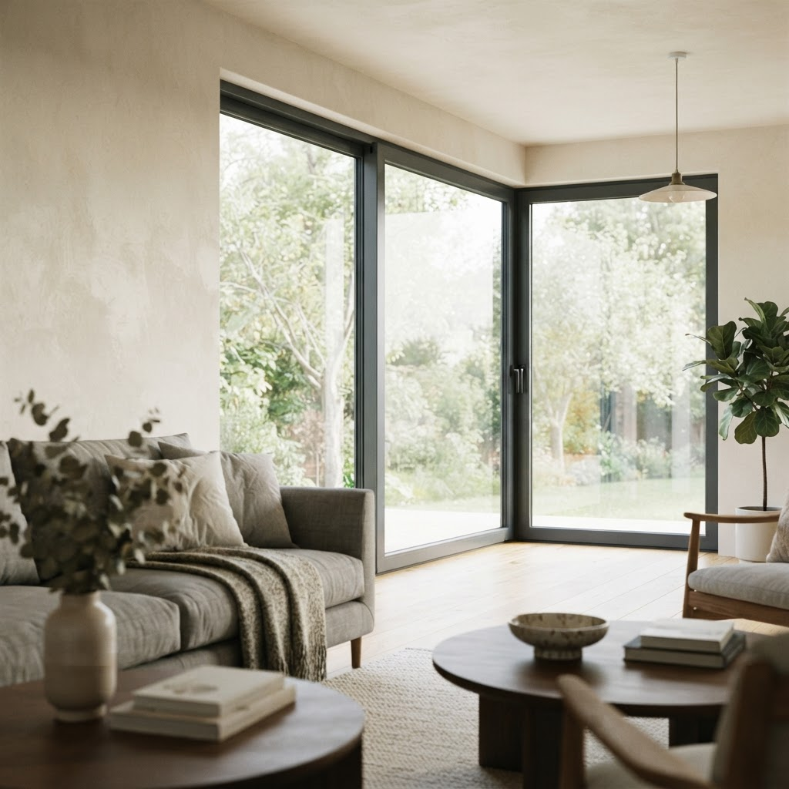
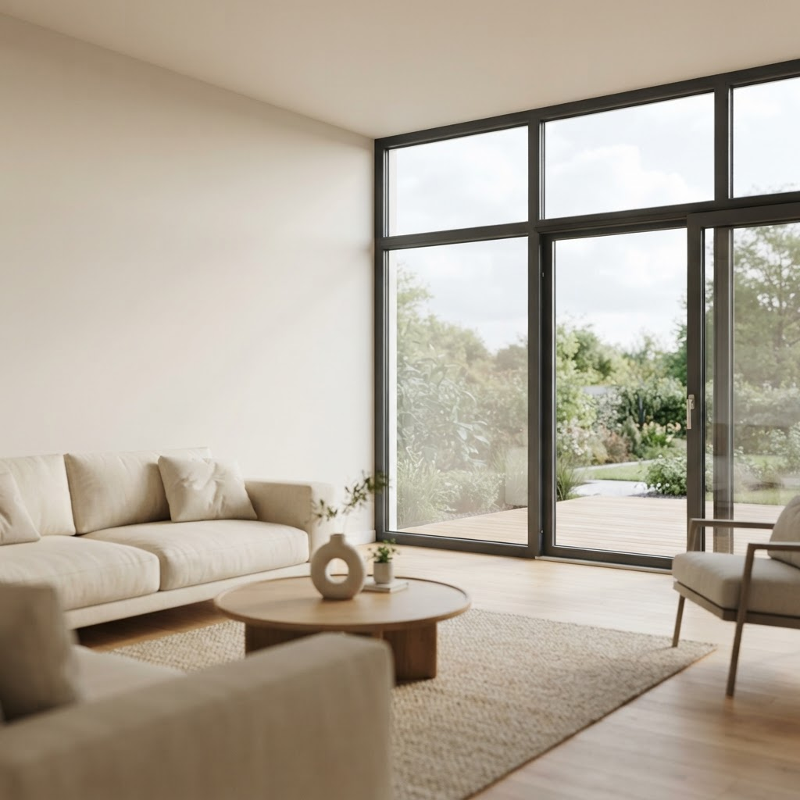
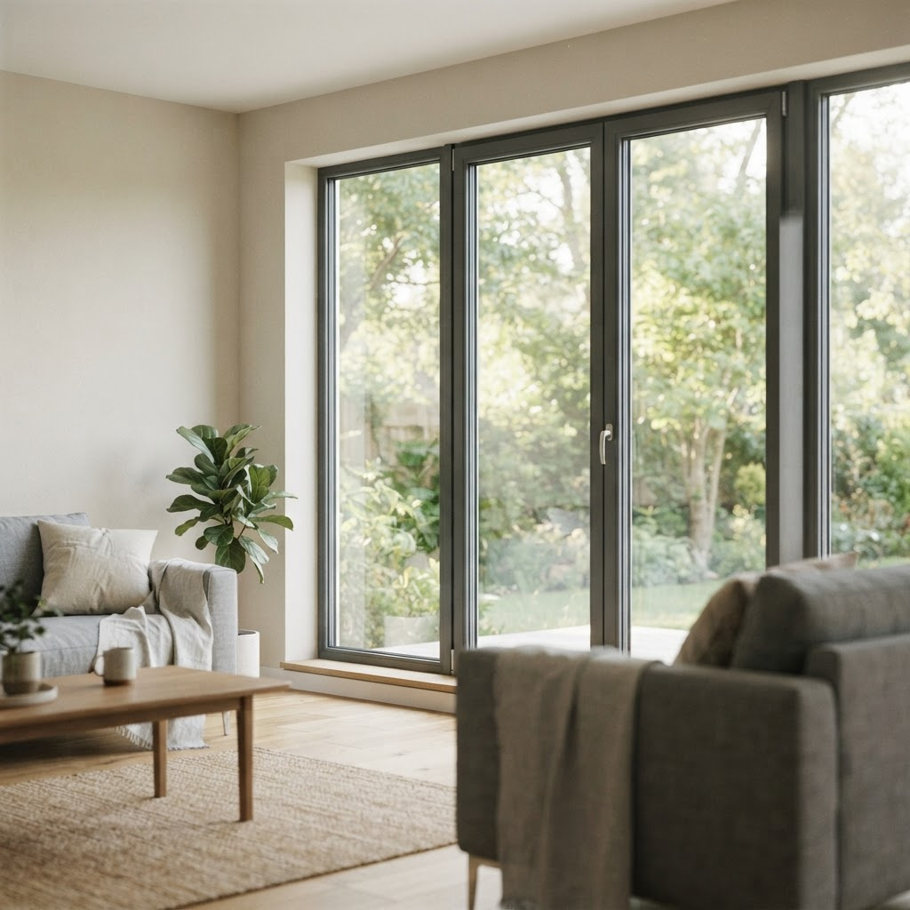

Калькулятор пластиковых окон онлайн москва в Северо-Восточном округе

Содержание
Северо-Восточный округ Москвы застроен жильем разных десятилетий, требующим индивидуального подхода к остеклению. Наш сервис предлагает использовать калькулятор пластиковых окон онлайн Москва, чтобы рассчитать стоимость проекта без визита замерщика.
Расчет стоимости через калькулятор пластиковых окон онлайн Москва
Разберем случай клиента из СВАО, решившего сэкономить на профессиональной оценке. Заказчик внес в систему размеры проемов и выбрал базовый профиль, опираясь на визуальные данные. Проблема возникла на этапе монтажа: фактическая геометрия оконных проемов в домах старого фонда имеет отклонения, которые онлайн-сервис не учитывает. Из-за отсутствия точных замеров мастеру пришлось увеличивать монтажный шов, что снизило теплоизоляционные показатели конструкции. Мы делаем качественно, поэтому предупреждаем: самостоятельный ввод параметров — это лишь предварительный этап для понимания бюджета. Точный расчет всегда опирается на выезд специалиста, который оценит состояние четвертей, необходимость демонтажа старых конструкций и тип крепежных элементов. Самостоятельный выбор конфигурации часто ведет к ошибкам в комплектации фурнитуры, что впоследствии провоцирует продувание и провисание створок. Мы фиксируем параметры после инструментального осмотра, исключая перерасход материала и несоответствие размеров.
Почему самостоятельный выбор комплектации ведет к проблемам
Рассмотрим ситуацию, когда пользователь выбрал облегченный профиль для лоджии, находящейся на ветреной стороне. Ошибка заключалась в игнорировании климатических условий региона. Система выдала расчет, основываясь только на площади, но не учла ветровые нагрузки, характерные для открытых пространств Северо-Востока. В результате установка стандартных соединителей привела к вибрации рам при сильных порывах. Мы делаем качественно, учитывая плотность армирования, класс морозостойкости и количество камер в стеклопакете. Самостоятельный подбор через веб-интерфейс часто игнорирует такие детали, как тип отливов или необходимость установки расширительных профилей под подоконник. Любое отклонение в миллиметрах при установке конструкций в панельных или кирпичных домах приводит к нарушению герметичности. Профессиональный монтаж требует подготовки проема, очистки поверхностей и строгого соблюдения уровня, чего невозможно достичь, полагаясь исключительно на данные калькулятора без инженерного контроля.
Можно ли доверять результатам онлайн-расчета на 100 процентов?
Результаты онлайн-системы являются приблизительными и не учитывают скрытые дефекты проемов. Для точной сметы необходим осмотр мастера, который оценит состояние стен и предложит технически верные решения. Только после замеров можно гарантировать долговечность конструкции.
Итог сотрудничества
Результат всегда предсказуем: бесплатный замер, точный расчет на месте и фиксированная цена, прописанная в договоре.
Бесплатный замер
Оставьте заявку, и мы приедем в удобное время. Рассчитаем стоимость на месте и зафиксируем цену в договоре.
Вызвать замерщикаНаши статьи

Компании по установке пластиковых окон в москве в Северо-Восточном округеСеверо-Восточный административный округ Москвы — это плотная застройка, где вопрос микроклимата в квартире стоит особенно остро из-за шума магистралей. Качес…
Сколько стоит окна пластиковые дешево с установкой москва в Северо-Восточном округеСВАО активно застраивается, поэтому спрос на замену остекления здесь стабильно высокий. Жители округа часто ищут, где заказать пластиковые окна дешево с уста…